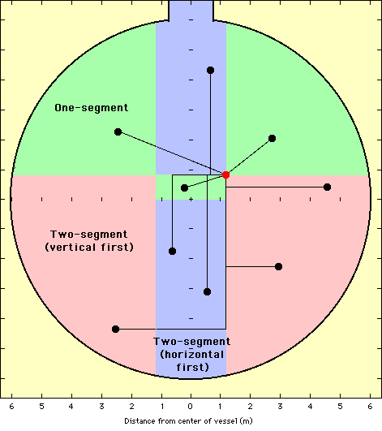

Calibration Manipulator
Software
Calibration Manipulator
Software
PolyAxis ORTHO Motion Strategy
Example source paths for ORTHO PolyAxis motion. The starting point
is red, and the paths for various endpoints are shown. Areas of the AV
are coloured based on the endpoint position to correspond with the
different algorithms used to determine the source path. The purpose
of this strategy is to avoid the high/low tension areas during motion between
any two arbitrary points in the vessel.
